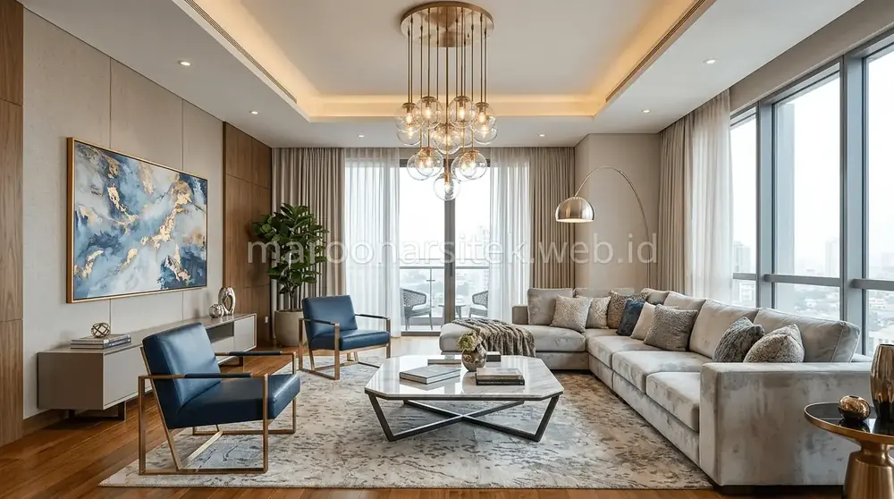
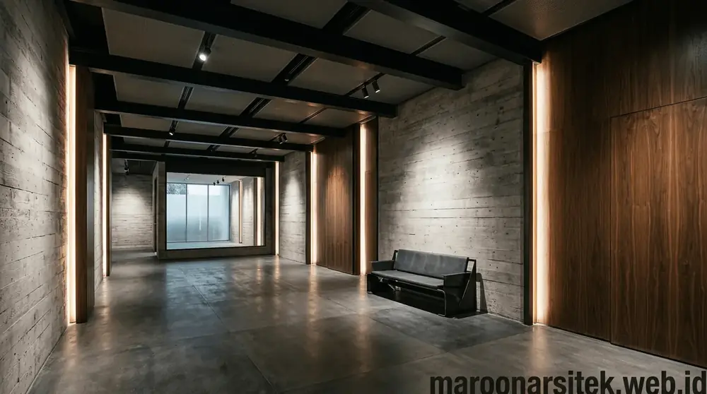
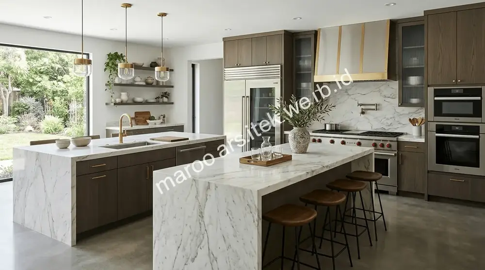
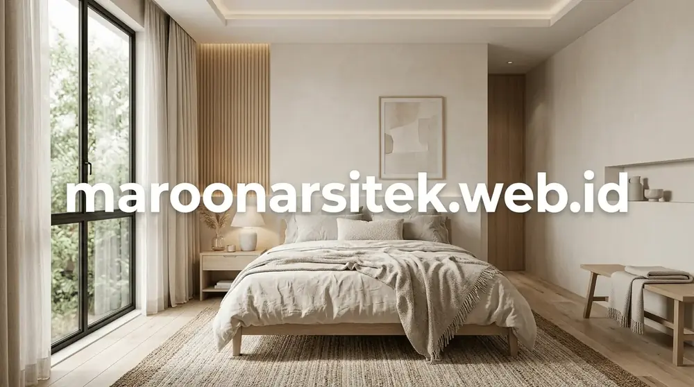

Desain Interior yang Personal & Berkelas
Interior adalah jiwa dari sebuah bangunan. Tim desainer interior Maroon Arsitek merancang setiap sudut ruangan dengan teliti—memilih skema warna harmonis, pemilihan material finishing berkelas (marmer, kayu solid, HPL premium, fabric), hingga penataan lighting yang menciptakan suasana hangat dan mewah.

Fokus Desain Interior Maroon Arsitek
Living Room & Foyer
Backdrop TV marmer, kisi-kisi partisi ruangan, sofa custom, dan area penerima tamu yang impresif.
Kitchen Set & Pantry
Dapur bersih & kotor dengan kitchen island, top table marmer/solid surface, dan kabinet anti rayap.
Master Bedroom & Walk-in Closet
Kamar tidur utama dengan headboard empuk, meja rias elegan, lemari pakaian kaca tempered, dan LED strip.
Office & Commercial Interior
Interior kantor, meeting room, kafe, resepsionis, dan ruang kerja privat yang produktif dan estetik.
Karya Desain Interior Maroon Arsitek



Ingin Ruang Interior yang Nyaman & Menawan?
Diskusikan preferensi gaya, ukuran ruangan, dan budget interior Anda bersama desainer interior Maroon Arsitek.